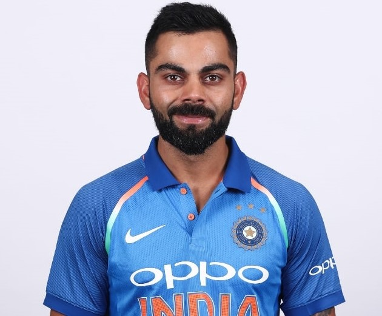
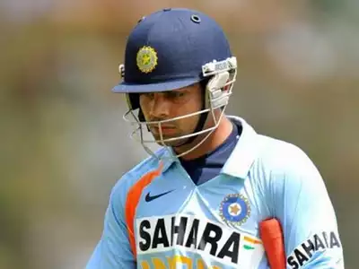
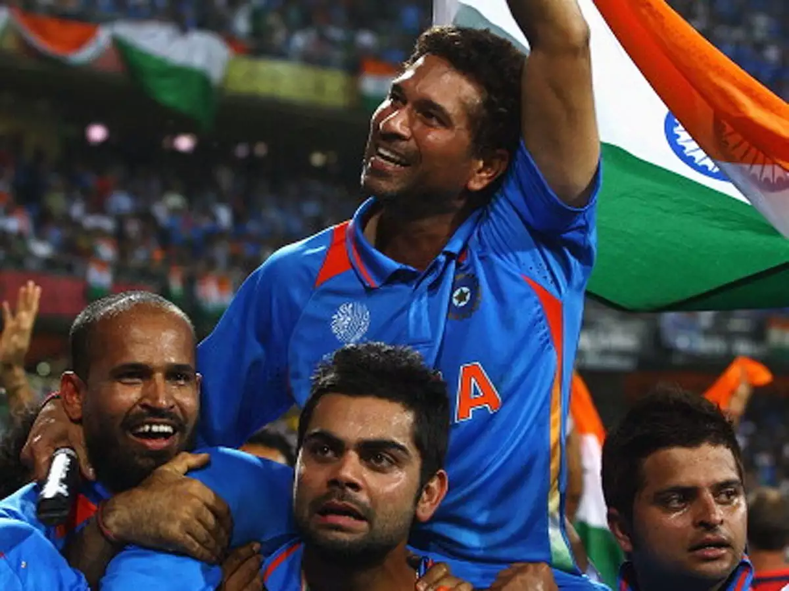
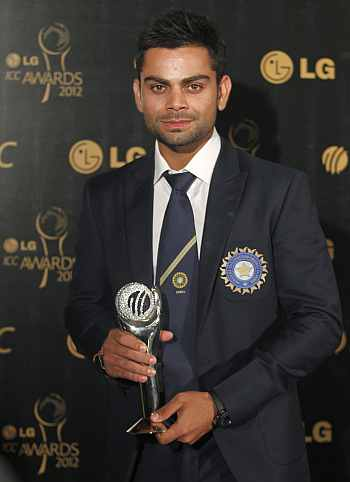
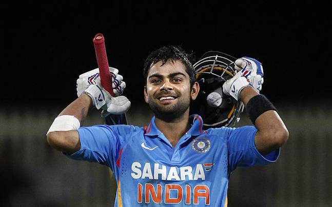
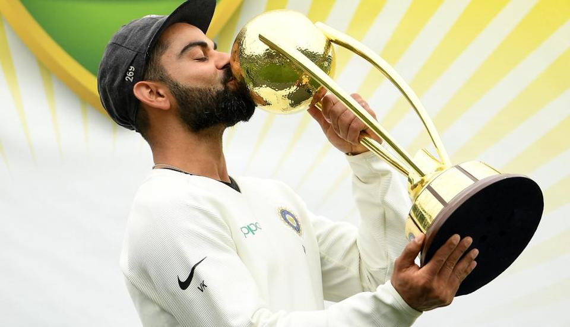
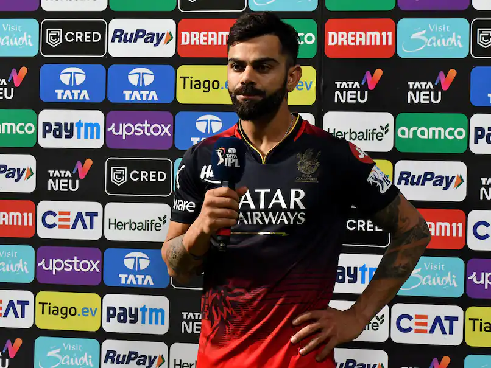
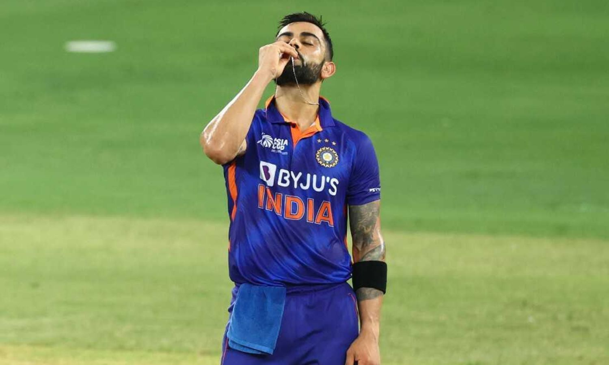

VIRAT KOHLI:THE KING OF CRICKET
Personal Information
Born : Nov 05 ,1988 (34 years)
Birth Place : Delhi
Height: 5 ft 9 in (175 cm)
Role: Batsman
Batting Style: Right Handed Batsman
Nationality: INDIAN
A spunky, chubby teenager with gelled hair shot to fame after leading India to glory in the Under-19 World Cup at Kuala Lumpur in early 2008. In an Indian team filled with saint-like icons worthy of their own
hagiographies, Virat Kohli, with his most un-Indian, 'bad-boy' intensity, would clearly be an outcast.
EMERGING:
He soon joined the senior Men in Blue in Sri Lanka, come 2008. In the absence of the regular openers, Virat Kohli was given a chance to open the batting in the ODI series.
He played some commendable knocks in his extended run as an opener, as India went on to win the ODI series. However, the established and formidable pair of Tendulkar and Sehwag kept
Kohli out of the team.
The 20-year-old continued to impress for Delhi and dominated attacks, clearly demonstrating that he belonged at a much higher level; that junior cricket was beneath his
standards. Kohli then traveled to Australia in 2009 for the Emerging players tournament and stamped his authority all over the bowling attacks. He added 'big-match temperament' to his résumé
too, lacing a fluent hundred in the final against South Africa, and guiding his team to a clinical victory. The young prodigy, barely old enough to receive his man-of-the-match champagne, ended
the tournament with 398 runs from 7 outings with two centuries and two fifties, ensuring that he remained fresh in the selectors' minds.
NATIONAL SPOT :
The selectors had no choice but to give Kohli another go in the Indian side, and this time he strung together a number of impressive scores. After being given an extended run, he repaid their
faith by notching up his maiden ODI hundred in an impressive run-chase against Sri Lanka in December 2009 - his first of many exemplary knocks in run-chases. In the World Cup final of 2011,
the biggest stage of them all, Kohli, along with his Delhi teammate Gautam Gambhir, pulled off a largely underrated rescue effort with an 83-run stand after losing the openers early. This knock
played a crucial role in setting the platform for MS Dhoni's fabled knock of 91*, which eventually won India the World Cup on that enchanting evening in Mumbai.
In the hangover of the World Cup euphoria, Kohli continued to take giant strides in the limited-overs format. Three years after his ODI debut, he was finally handed the coveted Test cap >in the
Caribbean islands in July 2011, owing to the need to rest the senior players. After a series each against the Dukes ball and the SG ball, it was now time for his trial against the Kookaburra
Down Under. In the first two Tests, he seemed to lack the technique to play in Australia, maintaining his low stance on the bouncy tracks. He also had a rather restricting trigger movement
with his front-foot routinely coming across towards off-stump, thereby hindering the necessary movement to play back-foot shots such as the pull and the cut.
DOMINATION :
The selectors and the captain persisted with him going into the 3rd Test, and he delivered a break-through performance on a bouncy Perth wicket - an impressive 75 - where a visible change in
technique was visible. He managed to stand tall, with a more open stance, and exhibited the back-foot shots in his repertoire during the course of the innings. The volatile Kohli managed to
overshadow his impropriety in conduct with his performance in the final Test of the series. Notching up India's only century of a disastrous tour, Kohli was the shining light in amidst the chaos,
as he stroked his way to a hundred in Adelaide exhibiting the will to improve and extraordinary focus under pressure in the searing heat and pressure of Australia.
While he grappled and clawed his way into the Test side, he went on a record-breaking spree in ODIs: the Indian record for the fastest to multiples-of-thousand runs in ODIs, culminating in the
world record for the fastest to 9000 runs in ODIs. He was also the highest run-scorer for India in ODIs for three consecutive calendar years - 2010, 2011 and 2012 and won the ICC ODI cricketer
of the year award in 2012.
LEGEND OF CRICKET:
We remember the accolades, but where did it all begin? There's always the one innings that made the world sit up and take notice; the 86-ball knock which he started off as a brash boy, but
ended as a man. Chasing an improbable target of 321 off 40 overs to stay alive in the tournament, he laid into the Sri Lankan bowlers and carted his way to 133*, getting India home with more
than 2 overs to spare, practically pulling them out of the airport after M.S. Dhoni rather ignorantly remarked that India had already been eliminated from the tournament.
King Kohli had arrived.
The king of the run-chase, and a plethora of ODI records in the modern age.
CHASE-MASTER :

Kohli has a seemingly hot head on his shoulders, but he channels all his anger while he is batting. Known to be an aggressive batsman always on the lookout for runs, he has a fairly sound,
albeit slightly unconventional technique, which makes him judge the length of the ball earlier than most, and amazingly quick wrists to run his hands through the ball, even against fast bowlers.
He is equally adept against pace and spin, and never looks ungainly at the crease. With nimble foot-movement against the spinners, he is known to be quite destructive when the situation demands
it. He has had to fill some rather big shoes of his predecessors, and has done an admirable job to say the least.
CAPTAIN:
With regular captain MS Dhoni ailing from an injury, Kohli was named stand-in captain for the first Test at Adelaide. After an abysmal tour of England, critics were sceptical of Kohli's
performance in Australia in the Border-Gavaskar trophy in December. Kohli proved that they couldn't have been more wrong, as he scored two fluent hundreds in the first Test at Adelaide.
His second innings masterclass of 141 almost pulled off a stunning run-chase on a notorious 5th day rank-turner, and went on to score a total of four hundreds on this tour. Saying that he had
silenced critics would be an understatement.
As India prepared for their title defence ahead of the 2015 World Cup Down Under, with the catch phrase 'Won't give it back' doing the rounds, Virat Kohli was touted to be a key performer for
India. The Indians had a terrible run in Australia, having failed to win a single match in the Test series as well as the succeeding ODI tri-series. Kohli started off in signature fashion, with a
typically stroke-filled hundred against Pakistan as India maintained their unbeaten run against their arch-rivals in ICC events. As India stormed into the semi-finals unbeaten, Kohli's form
continued to take an uncharacteristic dip, culminating in a painstaking 1 in the semi-final loss against the co-hosts and eventual champions, Australia.
Kohli, the then full-time Test captain, toured Sri Lanka with a young side without the services of Mahendra Singh Dhoni, wary of the Sri Lankan spinners' fabled 4th innings con-job.
After losing the first Test, Kohli's India recorded a dramatic come-from-behind win in the series, going on to win 2-1. Kohli continued to build on his auspicious start to Test captaincy as he led
them to a rout of the South Africans on a series of rank-turners all around India. He had a quiet series with the bat, as the more stoic batsmen of his team took over. Nonetheless, the triumph
took India to the No. 1 spot in the ICC Test rankings for the first time since they forfeited it to England after the forgettable white-wash in 2011.
He continued his emphatic run in T20 cricket (and running) like a man possessed though, thrashing boundaries with ridiculous ease. Despite an 89* in the 2016 semi-final against the
West Indies (extending his inhuman run of form in the format), India's bowling panicked at a crucial stage. One had to feel sorry for him as he had to make do with the 'Player of the tournament'
award for the second successive Twenty20 World Cup; a distinction he would've gladly exchanged for the elusive World T20 trophy. Kohli's thirst for runs showed no signs of slowing down
as he looted a small matter of 973 runs during the 2016 edition of the Indian Premier League, the most (by far) by any batsman in the history of the tournament - as he led
his Royal Challengers Bangalore (RCB) franchise to a runners-up finish.
However, it isn't beyond Kohli to prove his critics wrong yet again, as he continues to take criticism on his stride,setting new standards for modern batsmanship. And as a captain, he had his ups
and downs, marred with a bit of controversy towards the end of his tenure. Kohli also became the first Indian, as well as the first Asian captain, to return victorious from Down Under when India
won the 4-match Test series 2-1 (2018-19). Under Kohli, India also emerged as the number one Test side for five successive years (2016-2021).
THE FINAL FRONTIER

In the first week of 2018, Kohli went on to lead India in South Africa, a few weeks after he tied the knot with Indian actress and long-time girlfriend, Anushka Sharma. India went on to
concede the series in the first two Tests, but came back to win the third Test match on a difficult wicket. In a series full of difficult wickets, Kohli exhibited tighter technique than he had in England,
and batted better than he did in his more prolific tour of South Africa in 2013/14. Kohli went on to conquer his (personal) final frontier in England later in 2018 too, scoring 593 runs in 10 innings,
including 2 hundreds, and not conceding his wicket to his fabled nemesis, Anderson, even once. India went on to lose the series 1-4, and Kohli's record as captain was tainted by two consecutive
Test series losses away.
Nevertheless, on a personal level, he had left no stone unturned to transform himself into the most consistent and versatile batsman of his age, and arguably the better of the Big Four.
In October 2018, during the second of 3 consecutive hundreds against the West Indies in ODIs, he went on to become the fastest batsmen to reach the 10,000-run mark in ODIs, trouncing
Sachin Tendulkar by a staggering 54 innings. Despite arguments about the two new balls, better bats, batting-friendly conditions, and more lethal bowlers, it was difficult to deny that this was a
statistical outlier, very much along the lines of 99.94 - perhaps unlikely to ever be trounced.
However, being a cricket romantic (as we all are), as we reflect on his prolific international career (and with a plethora of records to be broken over the next decade) one must look back at the
CB series knock that changed it all. On that fateful night at Hobart, Kohli had not only kept his team in contention, he had actually dragged a drained Indian side out of the airport. That night,
at the Bellerive Oval, Virat Kohli transcended into a league of his own to etch his name in history - and a cricketing superstar was born.
IPL:
Ahead of the 2019 edition of the Indian Premier League (IPL), Virat Kohli showed how much faith he had in the franchise by declaring that he would perhaps end his career with the ,
Bangalore-based Royal Challengers. The only player to be a part of a single franchise for the entire duration of the tournament (right from the start of the cash-rich league in 2008), Kohli has
developed an affection with the franchise and with the fans over the period of time.
Having been brought into the franchise as a young emerging player in 2008, Kohli's growth has been stupendous. He learnt under the wings of Rahul Dravid and Anil Kumble, before finally
establishing himself under Daniel Vettori. It wasn't a free-flowing start, in a team that was struggling to find the essence of the tournament, it wasn't a surprise that they had a struggling youngster
in the midst. Having learnt the ropes in the first three-year cycle, it wasn't a surprise that he was the only player retained in 2011. The purple patch began somewhere around that region, he then
proved it wasn't just a purple patch, it was a career that was beginning to flourish. Soon after, Kohli became the best in all aspects, not just white-ball cricket, but in the red-ball version as well.
It became a no-brainer when he was asked to captain the Bangalore franchise on a permanent basis from 2012 and it also translated into more consistency with the bat. Kohli soon turned into a
fan favourite even as runs flowed from his bat and eventually becoming the leading-run scorer in the history of IPL. Circa, 2016 - the India and RCB captain blasted 973 runs - the most by any
player in the history of the game and it included four hundreds - the most by a batsman in a single edition. Alas, all this didn't translate into a title triumph - one that has kept Kohli and
Bangalore waiting so far (As of March 2023).
THE 71ST CENTURY :
Last two and a half years have taught me a lot. I am going to turn 34 in a month. So those angry celebrations are a thing of the past," a smiling Kohli said during the innings break of India's last
Asia Cup match against Afghanistan.
on Thursday smashed 122 not out off 61 balls to get his maiden T20 hundred and help India register a huge 101-run win over Afghanistan in the inconsequential Asia Cup match here.
He had
taken a month-long break before Asia Cup to focus on his mental health and found that he didn't make any technical changes but perhaps could never really comprehend the cobwebs
in his mind.
"I have had many suggestions, lot of advice has come my way; people were telling me I was doing this wrong, that wrong, I picked out all the videos from the best time I had; same initial
movement, same approach towards the ball and it was just what was happening inside my head I wasn't able to explain it to anyone.
With regular captain MS Dhoni ailing from an injury, Kohli was named stand-in captain for the first Test at Adelaide. After an abysmal tour of England, critics were sceptical of Kohli's performance
Australia in the Border-Gavaskar trophy in December. Kohli proved that they couldn't have been more wrong, as he scored two fluent hundreds in the first Test at Adelaide. His second innings
masterclass of 141 almost pulled off a stunning run-chase on a notorious 5th day rank-turner, and went on to score a total of four hundreds on this tour. Saying that he had silenced critics
would be an understatement.